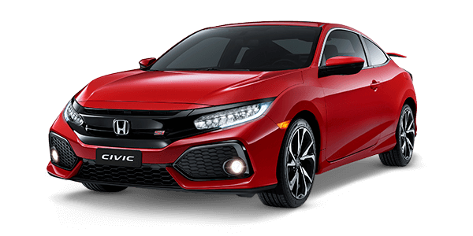

Honda Civic SI
Ano: 2008
Cor: Vermelho Rally Sólido, Preto Nighthawk Perolizado, Prata Global Metálico
Descrição:
Motorização e Desempenho:
Motor: 2.0 i-VTEC DOHC aspirado (K20Z3).
Potência: 192 cv a 7.800 rpm.
Torque: 19,2 kgfm a 6.100 rpm.
Câmbio: Manual de 6 marchas com engates curtos e precisos.
Tração: Dianteira (FWD) com diferencial de deslizamento limitado (LSD),
0 a 100 km/h: Aproximadamente 8,1 segundos.
Velocidade máxima: Cerca de 215 km/h.
Corte de giro: 8.300 rpm (com VTEC que entra por volta dos 6.000 rpm).
Consumo médio:
Cidade: 7,5 km/l (gasolina) /
Estrada: 10,5 km/l (gasolina).
Tecnologia e Conectividade:
Sistema de som premium com subwoofer de fábrica,
CD Player com MP3/WMA, entrada auxiliar,
Display digital no painel (com conta-giros analógico),
Sem central multimídia de fábrica (época pré-touchscreen),
Volante multifuncional com comandos de áudio.
Segurança:
Airbags frontais,
Freios a disco nas 4 rodas com ABS e EBD,
Estrutura reforçada (ACE Body Structure),
Cintos de segurança de 3 pontos para todos os ocupantes,
Controle de tração e estabilidade não disponível (na época ainda não era comum).
Design Exterior:
Exclusivo na carroceria cupê de 2 portas (importado do Canadá),
Rodas de liga leve aro 17” com acabamento escurecido,
Aerofólio traseiro esportivo,
Escapamento com saída cromada,
Grade frontal exclusiva com logo "Si",
Lanternas traseiras fumê,
Faróis com máscara negra.
Interior e Conforto:
Bancos esportivos com encosto alto e costuras vermelhas,
Detalhes em vermelho no painel e portas,
Pedaleiras esportivas em alumínio,
Volante revestido em couro com logo “Si”,
Ar-condicionado digital,
Direção elétrica progressiva,
Acabamento mais simples que sedãs executivos, mas com pegada esportiva forte.
Dimensões:
Comprimento: 4.480 mm,
Largura: 1.750 mm,
Altura: 1.395 mm,
Entre-eixos: 2.700 mm,
Porta-malas: 340 litros,
Peso: Aproximadamente 1.285 kg.
Valor: R$74,299